С помощью методов Fetch и Fetch мы можем взаимодействовать с сервером через ассинхронные запросы. Для лучшего понимания как все это работает, рассмотрим сначала метод XHR
Перед тем как мы начнем, первое что нужно сделать, это подготовить URL адрес, по которому мы сможем делать ассинхронные запросы.
Существует такой сервис, который называется JSONPlaceholder
Что это за сервис? Это Фэйк-онлайн REST API для тестирования и прототипирования
На этом сервисе есть ссылка, которая будет нам возвращать JSON строку с массивом объектов, которые будут содержать данные 10-ти пользователей. Вот эта ссылка:
https://jsonplaceholder.typicode.com/users
B так, копируем это адрес и помещаем для удобства в переменную requestURL
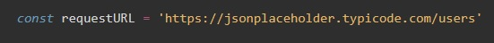Теперь нам надо создать переменную, которая будет экземпляром глобального класса XMLHttpRequest
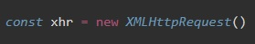Применяя к этой переменной определенные методы, мы будем совершать запросы на сервер в фоновом режиме, не перезагружая страницу.
Первый метод, который мы применим называется open
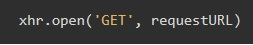Этот метод открывает соединение и имеет два входных параметра:
Что за методы? Существуют базовые методы, такие как GET или POST. которые нам известны из php
Выбирая метод мы, тем самым говорим, что именно надо сделать
Второй метод который мы применм к xhr выглядит вот так:
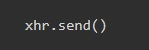Этот метод отправляет запрос на сервер
Теперь если в браузере открыть панель разработчика (f12) и перейти на вкладку "Network" и нажать на кнопку фильтра XHR, то мы увидим строку users с типом xhr
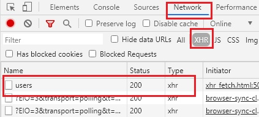Нажимаем на это строчку, после чего откроются данные запроса
Вкладка Headers - здесь хранится информация по запросу. По какому URL был сделан запрос, статус запроса, IP сервера и т.д.
Вкладка Response - Здесь мы видим реальный ответ сервера на запрос.
Вкладка Preview - тут мы видим ответ сервера, но уже после того как Chrome нам ответ распарсил. В нашем случае это массив объектов
Для того что бы мы могли обрабатывать те данные, которые прислал нам сервер, нам надо к нашей переменной xhr применить метод onload
Очень важно этот метод вызывать до метода send/ выглядеть это будет вот так:
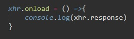Методу onload мы на вход даем стрелочную функцию, которая будет выводить в консоль результат запроса, т.е. response (англ - ответ). Но результат что вернул нам сервер в формате JSON, т.е. в виде строки, нам надо его распарсить. Длеается это так:
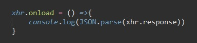Теперь в консоли мы увидим массив объектов с данными пользователей
Но лучше вопрос с переводом из JSON в массив решить иначе, ведь при таком методе нам придется каждый раз вызывать метод parse.
У класса XHR есть еще один метод, который переводит любые ответы сервера из JSON в массив.
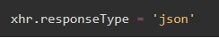У объекта xhr есть еще один очень полезный метод - onerror
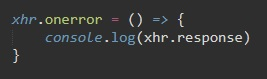onerror - возвращает текст и код ошибки если в response что-то не так
onerror помещается перед методом send
Бывают случаи когда например сервер нам отвечает без ошибки, но при этом он несет в себе статус-код, который говорит нам о том, что произошла ошибка. При этом мы не будем попадать в onerror, потому что это другого типа ошибки, Network ошибки и т.д. Для того что бы более универсально обрабатывать все потенциальные ошибки, мы можем обратиться к методу onload b использовать там условный оператор if
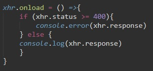xhr.status - возвращает статус ответа сервера. самый известный 404 (not found)
Сделаем теперь наш метод универсальным, запихаем весь код в функцию, которая нам будет возвращать Promise, ведь код обращения к серверу является ассинхронным.
Создадим функцию sendRequest
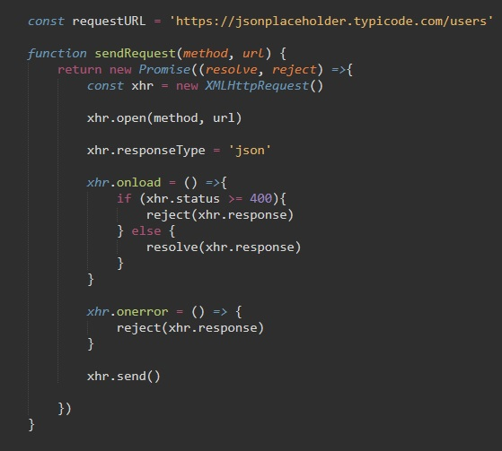Функция sendRequest принимает в себя два параметра: метод и url, которые используюся в методе xhr.open(method, url)
Далее наша функция возвращается нам новый промис, у которого естественно два метода: resolve и reject.
Затем создаем переменную xhr, применяем к ней сначала метод open, затем указываем тип ответа на запрос - json, далее идет код отлова ошибок. Здесь важно заметить, что результаты ошибок и результаты успешного выполнения запроса, мы помещаем не в консоль, а даем на вход методам промиса resolve и reject. В заключении вы вызываем метод send
После того как наша функция готова, вызываем ее. можно повесить ее на нажатие кнопки или еще как...
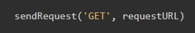Т.к. sendRequest возвращает нам промис, а методe resolve мы дали на вход результат запроса (response), то мы можем к нашей функции применить метод then с параметром data. То что нам вернет resolve то и попадет в data метода then. Этот результат мы выводим в консоль. Вот как выглядит вызов функции
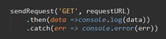Этот способ написания кода называется "чейнить" (от англ chain - цепь)
Теперь преобразуем нашу функцию на отправку данных на сервер, т.е. мы будем у метода open использовать метод 'POST'
Так как нам надо что то отправлять, добавим еще один входной параметр нашей функции sendRequest. По умолчанию этот параметро будет null, так как при вызове метода 'GET', там ничего не должно быть
Этот третий параметр будет принимать в себя объект. Для начала создадим этот объект
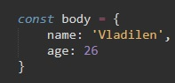Теперь этот входной параметр надо передать методу xhr.send. Но дело в том, что перед этим нам надо наш объект перевести в JSON строку, поэтому код будет выглядеть так:
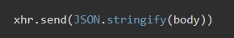Но этого не достаточно! Нам так же необходимо перевести в JSON headers request, т.е. установить header который отправляется с запросами. Делается это так:
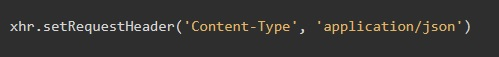Эта запись прописывается рядом с xhr.responseType = 'json'
Теперь наша функция выглядит вот так:
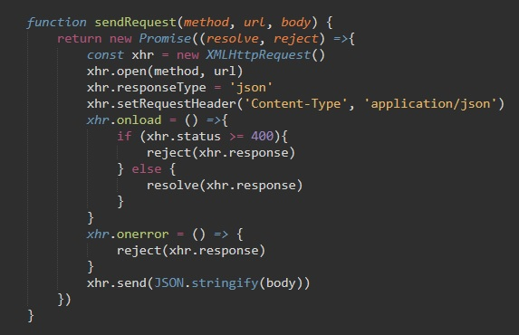А вызов функции с методом 'POST' Выглядит так:
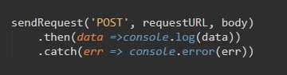Как будет выглядеть наша функция sendRequest но уже с применением метода fetch? Тут все еще проще и лаконичнее
Метод fetch нам сразу будет возвращать promise. Метод принимает в себя два параметра. Первым параметром идет url. Вот как это выглядит:
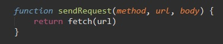В принципе этого кода нам достаточно, что бы выполнить метод 'GET'.
Учитывая то,что метод fetch нам возвращает Promise, то мы можем его зачейнить методом then. но мы пока этого делать не будем и посмотрим в браузере, что нам выдал метод fetch в консоль на этом этапе:
Вызвали мы нашу функцию вот так:
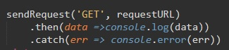А вот что вышло в консоли
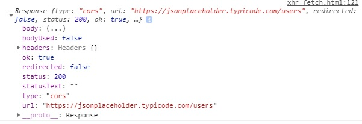Вместо массива объектов, мы получили объект который содержит данные о б ответе сервера (Response). У этого объекта есть ключ, который называется body и именно в нем хранятся нужные нам данные. но пока они в формате ReadableStream
Этот формат был создан для оптимизации, в случае если мы получаем с сервера большой объем данных, то мы их будем получать поэтапно.
Как нам перевести из ReadableStream в наш привычный массив объектов? Очень просто. Мы к методу ftch применяфем метод then.
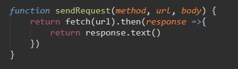Метод then получает на вход метод с входным параметром response и этот метод возвращает нам результат метода text() который мы применили к response.
Теперь если посмотретьв консоль то мы увидим ту самую строку JSON с данными пользователей
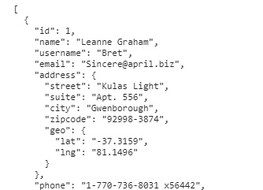Теперь этот результат надо распарсить. Для этого у fetch есть метод JSON, т.е. вместо метода text() мы используем метод json()
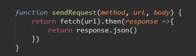Теперь если обновить страницу, то в консоли мы увидим уже знакомый нам массив объектов
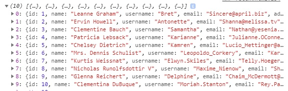Теперь разберемся с методом 'POST'. Как было сказано выше, метод Fetch принимает в себя два параметра, первый это url, а второй - это объект
Этот объект должен иметь три ключа:
Вот как теперь выглядит наша функция:
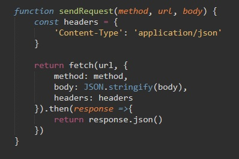Вызов нашей функции с методом POST выглядит как и раньше
Просто добавляем if
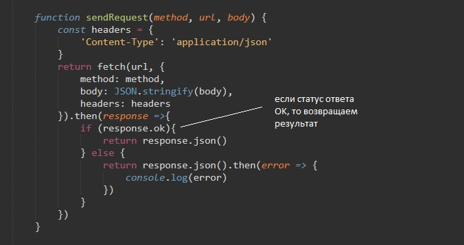